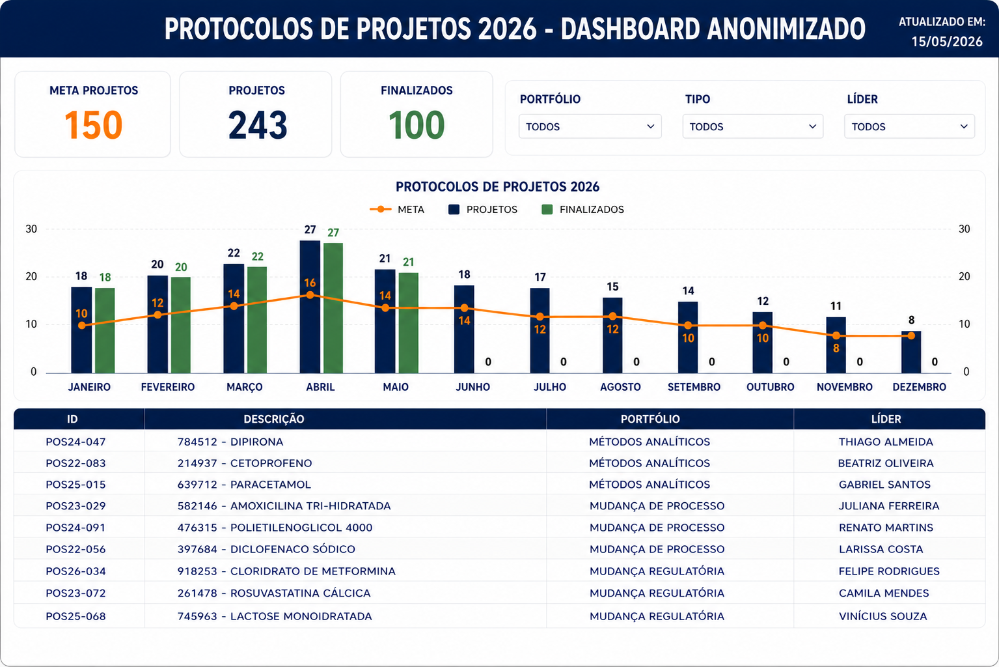

Dashboard Executivo
Executivo
Dashboard Executivo de Projetos Prioritários
Problema de negócio
Necessidade de consolidar informações de projetos prioritários em uma única fonte confiável para acompanhamento gerencial e suporte à tomada de decisão.
Tecnologias usadas
Power BI
Power Query
SharePoint Lists
Excel
Resultados
Fonte única para acompanhamento executivo com monitoramento centralizado dos indicadores estratégicos, facilitando a priorização e controle operacional dos projetos prioritários.